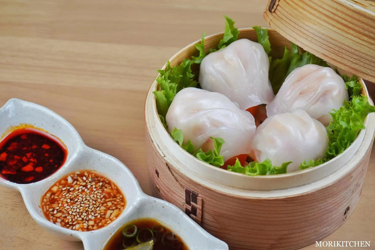

Crystal Shrimp

Description
One of Liyue's traditional snacks. The stuffing is taken from whole fresh shrimp, and the glistening quality of the flour can be guessed at from the translucence of the outer skin. Has a springy, tasty chew.
Ingredients:
- 1/4 boiled bamboo shoot
- 1/2 carrot
- 300g shelled shrimp
- a little bit of ginger
- a pinch of white pepper
- a pinch of salt
- a pinch of sugar
- 5g potato starch
- 10ml cooking wine
- 5ml sesame oil
- 180g wheat starch
- 50g potato starch
- 12g lard
- 260-280ml hot water
- lettuce
Sauce Options:
Sauce 1:
- 15ml black vingear
- 5ml chili oil
Sauce 2:
- 5ml gochujang
- 5ml soy sauce
- garlic
- a pinch of salt
- water
- roasted white sesame
Sauce 3:
- 10ml soy sauce
- 5ml mirin
- 8ml vinegar
- lemon
- scallion
Steps:
- Chop up your boiled bamboo shoots into very small chunks.
- Cut your carrot into thick slices.
- Roughly chop the shrimp just enough to retain their texture.
- Now mince half of the chopped shrimp until it turns into a mush.
- Take both the minced and chopped shrimp and place it into a bowl. Grate some ginger, then add your white pepper, salt, sugar, 5g of potato starch, cooking wine, sesame oil, and chopped boiled bamboo shoots. Mix well.
- Place your mixture into the fridge and let it chill.
- Now pour your wheat starch, potato starch, and lard into a bowl. While stirring the mixture, gradually pour in your boiling water into the bowl.
- Once the texture thickens, begin kneading it until the dough comes together.
- Transfer the dough onto a flat surface and roll it into a cylinder shape.
- Begin forming your wrapper by cutting slices of the dough and rolling it out into a thin, circular shape, similar to a dumpling wrapper.
- Take your shrimp mixture from the fridge and begin to stuff your dumpling wrapper with the mixture. Close the dumpling by pinching the edges and then shaping the ends to look like the image.
- In a bamboo steamer, lay the surface with your sliced carrots and place the dumplings on top. Steam over boiling water for about 8 minutes.
- After they are done steaming, you can rearrange the food items by laying a sheet of lettuce on the bottom of the steamer, then the carrots, and finally the dumplings on top.
- Now make either all three sauces, or just one! And your dish is completed. Enjoy!